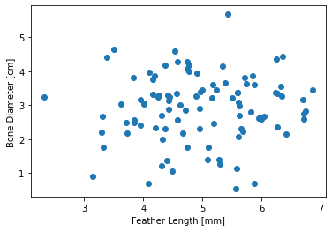

import numpy as np
import matplotlib.pyplot as plt
from myst_nb import glue
fig, ax = plt.subplots()
N = 100
x = 5 + np.random.randn(N)
y = 3 + np.random.randn(N)
plt.plot(x,y,'o')
plt.xlabel('Feather Length [mm]')
plt.ylabel('Bone Diameter [cm]')
glue('random-fig',fig, display=False)
myVar = "42"
glue("myLabel", myVar, display=False )
m = np.mean(y) # mean
s = np.std(y) # standard deviation
up = m+2*s # 95% confidence level
low = m-2*s # 5% confidence level
glue('avg',m, display=False)
glue('upper',up, display=False)
glue('lower',low, display=False)
